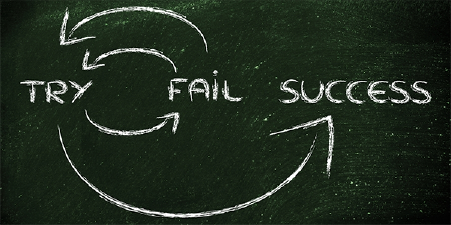

so here are some tips that you can consider in taking care of your mental health in your whole stay in college.
In Engineering, it is already a normal thing for students to fail especially in engineering subjects. That is why, if you failed your first quizzes, it is normal. There would really be a major adjustment if you came from high school. In high school, there are big chances that you can still pass an examination even though you did not study for it; Meanwhile in college, even though you studied well for a specific topic the whole night, there are still a lot of chances that you might fail it just even when you forget some part. That is why it is really and a lot of students are frustrated most especially if they received high grades in high school but suddenly failed in college. So what is my point? Receiving a failing mark (even consistently) is not the end of the world, as long as you are determined to salvage your grades, there is still a big chance for you to pass the subject.
Also in a sidenote, the FINALS is also called the game changer in college. It could either drastically pull up your grades or pull down your grades depending on how well you prepare for it. So do really well on the final examinations.
In Engineering, there are also a number of students who failed not just in their quizzes, but even in the subject itself. It might seem really devastating to fail a subject as it seems the end of the world for you, but actually it is an open foor for you to improve in that subject. You be delayed as you always want to graduate in time, but there can still be a chance for you to graduate in time when you arrange your flowchart properly. But if you really cannot graduate in time, still it is okay because what's important is, you will graduate someday knowing everything you learned in engineering.
This may seem an oxymoron statement but this really true especially if you'll take it as a challenge. I strongly believe that when you failed a test or even a subject, it means that there is a lot of room inside you that you can still improve and develop your engineering skill nad as long as you are in the university, it means an open opportunity for you to learn more. When you failed a test, you must be determined to get back to the track and achieve to still pass the subject.
Using the proper recourses will surely develop your study habit and even socializing with other people as you need to interact with them to acquire many important things in engineering.